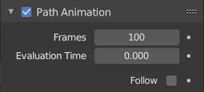

路径动画¶
路径动画 设置可用于确定子物体如何沿着特定路径移动。
Note
这个特性是不推荐的，但它仍然可用。一个更适合使用的方法是 Follow Path Constraint 跟随路径约束 。

路径动画面板。¶
- 帧
遍历路径所需的帧数，定义 估算时刻 设置的最大值。
- 估算时刻
物体沿曲线长度跟随所在的参数化位置(通过与 路径长度 值相除得出估算值)。默认情况下，它链接到全局帧号，但是可以通过设置关键帧对路径动画进行更多的控制。
- 跟随
使曲线路径的子物体沿路径的曲率旋转。
Note
不赞成，但仍然可用。一个更适合使用的方法是 Follow Path Constraint 跟随路径约束 。